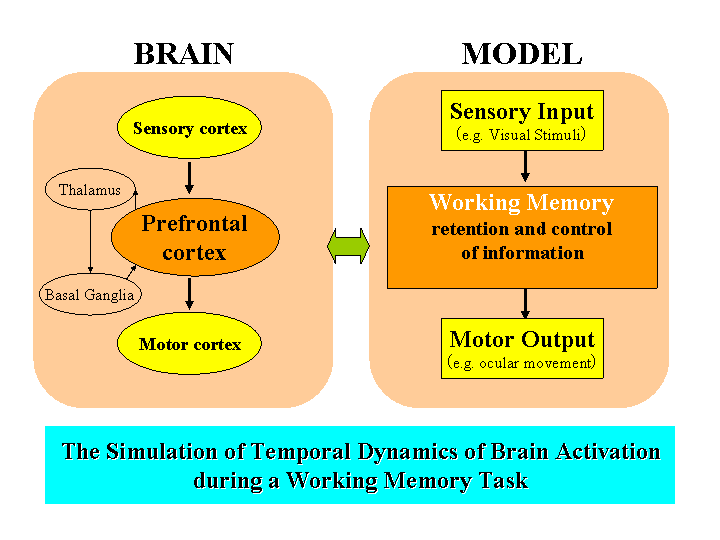
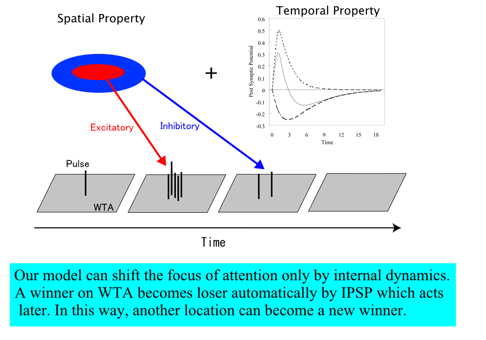

Neural network model of higher visual functions
Toshio Inui
Graduate School of Informatics, Kyoto University
e-mail: inui@i.kyoto-u.ac.jp
URL: http://www.cog.ist.i.kyoto-u.ac.jp/
1) Working memory
A major function of the prefrontal cortex is known as working memory, which retains relevant information on-line. The temporal patterns of neuronal activity in monkeys performing working memory tasks have been investigated. The neurons showing several temporal patterns must reflect the functions of working memory. However, their underlying mechanisms remain unknown. The main purpose of this study is explaining the fundamental problem of working memory, the dynamics of the whole system. In this study, we propose a neural network model of working memory to shed light on its mechanism and simulate some results of physiological experiments concerning the main functions of working memory; retention and control of several kinds of information. Our model is a fully connected recurrent network, feed-forward network with feedback. A characteristic of the fully recurrent network is that it can retain information for some time using a fixed point attractor. With this model, we can explain the dynamics of the whole system by simulating certain physiological results.
2) Visual search
In natural settings such as visual search, shifting attention is necessary to find the target. Most models of visual search assume the existence of a saliency-map, which represents the saliency of objects in the visual field. Although these models propose a mechanism of finding the most salient location, such as WTA (Winner Take All), the shift mechanism has not been studied well. We proposed a pulsed neural network model that can move the winning location on the WTA network only by its internal dynamics, combination of IPSP and EPSP. Our model makes clear that external inhibitory signal is essentially not necessary to shift the focus of attention. In this study, we propose a neural network model that can sustain a single focus of attention for a prolonged period. We have mainly studied how to shift the focus of attention. However, our visual system can keep the single focus of attention as well as shift the focus. This ¡Èsustained attention¡É mechanism is similar to the framework of the working memory model. Furthermore, we would like to study the mechanism for coordinate transformation in the visual system.

(19kb PNG image)
Click to zoom up

(83k PNG image)
Click to zoom up